나폴레옹 시대의 워드 프로세서 - 펜과 연필
게시: 2018-05-03T09:07:46+09:00
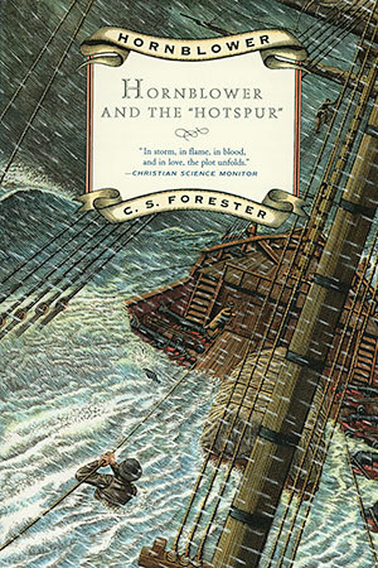
Hornblower and the Hot Spur by C.S.Forester (배경 1803년 영국 플리머스 항 외곽) ------
(작은 슬룹선 핫스퍼 호를 끌고 막 플리머스 항에 닻을 내린 혼블로워 함장은 결혼한지 얼마 안된 상태이고, 아내의 얼굴을 본 지도 몇달 된 상태입니다. 프랑스 항구를 봉쇄해야 하는 임무 특성상, 그에게는 육지에 잠깐이라도 상륙하여 아내를 볼 여가도 주어지지 않습니다. 특히 당장은 함대 사령관의 기함에서 점심이나 같이 하자는 전갈이 온 상태라서, 식사 시간에 늦지 않기 위해 서둘러야 하는 상태인데, 저 멀리 부두가에 자신의 아내 마리아가 와서 손수건을 흔들고 있다는 사실을 전해듣습니다.)
혼블로워는 지금 이 순간처럼 해군 복무가 노예 생활 같다는 생각이 든 적이 없었다. 그는 총사령관과 식사를 하기 위해 당장 배를 떠나야 했고, 해군의 전통인 시간 엄수는 그가 도저히 어길 수 없는 전통이었다. 게다가 지금 포어맨이 숨을 헐떡이며 뛰어왔다.
"미스터 부쉬로부터의 전갈입니다, 함장님. (기함으로 떠날) 보트가 기다리고 있습니다."
어쩌면 좋단 말인가 ? 부쉬에게 부탁하여 마리아에게 편지를 대신 써서 부둣가에 전달해달라고 할까 ? 그건 아니었다. 그렇게 할 경우 식사 시간에 늦을 위험이 있는데다, 마리아에게 누군가가 대신 쓴 전갈을 보낸다는 것은 너무 잔인한 일이었다. 그는 왼손잡이용 깃털펜으로 황급히 휘갈겨 써내려갔다.
"사랑하는 당신에게,
당신을 멀리서나마 보게 되어 너무 기뻤소. 하지만 아직 조금도 시간 여유가 없구료. 나중에 좀더 길게 쓰리다.
당신의 헌신적인 남편, H."
--------------------------------------------------------------------------------
윗 장면은 나폴레옹 전쟁 당시 영국 해군 장교의 생활과 모험을 그린 C.S. Forester의 역작 Hornblower 시리즈 중의 한장면입니다. 국내에서는 연경사에서 출판되었습니다. 여러가지 에피소드를 옴니버스 식으로 엮은 제 1권은 별로 재미없으니 건너 뛰시고, 제 2권 'Lieutenant Hornblower'부터 보시면 좋습니다.
여기서는 해군 장교로서의 임무와 남편으로서의 개인적인 사정 사이에 치여서 어쩔 줄 몰라하는 혼블로워의 고뇌가 엿보입니다. 혼블로워는 소심한 남자지만 항상 국왕에 대한 임무를 우선으로 하지요. 하지만 윗 장면만 보고도, 눈치가 빠르신 분들은 혼블로워네 집안 형편이 넉넉한지 아닌지를 아실 수 있습니다. 어느 부분이 그러냐고요 ? 바로 저 왼손잡이용 깃털펜 (left-handed quill)입니다. 혼블로워는 오른손잡이거든요.
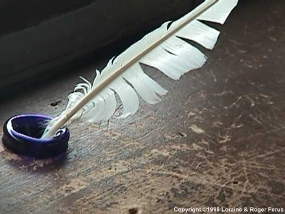
깃털펜은 나폴레옹 전쟁 당시 널리 쓰이던 펜입니다. 사실은 깃털펜은 나폴레옹 전쟁때 거의 전성기의 마지막을 누리고 있었습니다. 또한, 깃털펜은 유럽에서 가장 오래 사용된 필기구입니다. 대략 7세기부터 사용되기 시작해서 19세기 초반까지 사용되었으니 무려 1100년 넘게 사용된 것이지요. 그리스인들이 석판과 철필, 로마인들이 갈대펜 등을 써왔지만 모두 1천년 넘게 사용된 필기구들은 아닙니다.
깃털펜은 보통 거위의 날개깃털로 만들었습니다. 날개의 큰 깃털은 그 심의 가운데가 비어 있기 때문에, 그 홈 속에 잉크를 품었다가 모세관 현상에 의해 조금씩 흘려주므로 펜으로 사용하기에 딱 좋았던 것입니다. 손에 쥐기에도 꽤 적절하고요. 무엇보다도 깃털심 특유의 탄력있으면서도 견고한 재질상, 그것으로 쓴 글씨는 날카로운 필체를 주므로 예쁜 글씨가 나왔습니다. 강철촉을 단 펜은 나폴레옹이 오스트리아 공주에게 새장가를 가던 1810년 미국에서 특허 출원이 되었습니다. 생각보다 상당히 늦지요 ? 사실 이 강철촉 펜의 기본 원리는 깃털펜에서 그대로 따온 것입니다. 그나마 이 강철촉 펜이 대량 생산된 것은 1860년대에서였다고 합니다.
일반적인 깃털펜은 위에서 말한 것처럼 거위 깃털로 만들었지만, 더 비싼 것은 백조의 깃털로 만들었습니다. 하지만 같은 거위 깃털로 만든 펜이라도 가격대가 조금씩 달랐습니다. 날개의 깃털 그림을 보면 아시겠지만, 날개 깃털이라고 다 펜을 만들 수 있는 것은 아니었고, 맨 바깥 쪽의 큰 깃털들(아래 그림 1번 부분)만을 쓸 수 있었습니다. 특히 맨 바깥 쪽에서 2번째와 3번째 깃털이 가장 좋았고, 안쪽으로 들어올 수록 그 가격이 떨어졌습니다. 왜 맨 바깥 쪽 깃털은 왜 안좋았냐고요 ? 아래 그림 보십시요. 좀 짧쟎습니까 ?
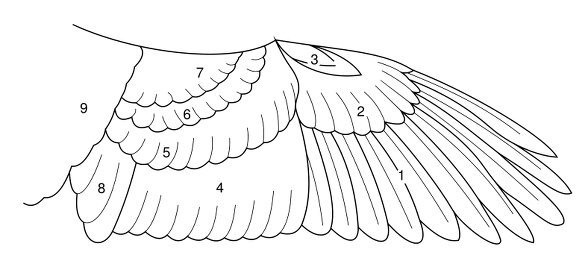
게다가 생각할 것이 하나 더 있었습니다. 날개에는 왼쪽과 오른쪽이 있쟎습니까 ? 그 중에서도 왼쪽 날개의 깃털로 만든 펜이 더 인기가 있었습니다. 왼쪽 날개에서 나온 깃털은 오른쪽으로 약간 굽어져 있기 때문에, 오른손잡이인 사람이 쓰면 깃털이 오른쪽 바깥으로 휘게 되어 쓰기에 더 편했기 때문입니다. 반대로, 오른쪽 날개에서 나온 깃털은 왼쪽으로 휘었기 때문에, 오른손잡이가 그런 깃털펜을 쓰려면 긴 깃털이 얼굴쪽으로 향하게 되어 무척 성가셨습니다. 모든 거위는 왼쪽과 오른쪽 날개가 하나씩 있는 것에 비해, 대부분의 사람들은 오른손잡이였기 때문에, 수요와 공급의 원칙에 따라 당연히 오른쪽 날개 깃털로 만든 펜은 가격이 훨씬 더 쌌습니다. 그 때문에 가난한 혼블로워는 왼손잡이용 오른쪽 날개 깃털로 만든 깃털펜을 썼던 것입니다.
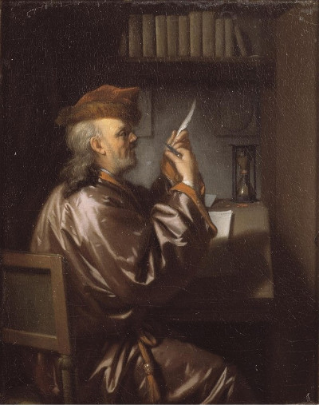
(깃털펜을 깎는 회계사 - Van Dijk 작)
이런 깃털펜으로 서류를 쓰자면 필요한 것들이 꽤 많았습니다. 깃털펜의 촉 부분은 한번 깎아놓으면 약 1주일 정도 밖에 못 썼기 때문에, 자주 펜 끝을 깎아주어야 했고, 그러자면 특수한 칼 (pen-knife라고 하는 칼)이 따로 필요했습니다. 게다가 깃털펜 촉 부분을 단련해주기 위해서 뜨거운 재 속에서 저어주다가 눌러주고 다시 끓는 물에 촉 부분만 삶는 등 복잡한 처리도 해주어야 했고, 잉크를 말리기 위해 압지용 모래, 또는 작은 석탄 풍로가 서재에 있어야 했습니다.
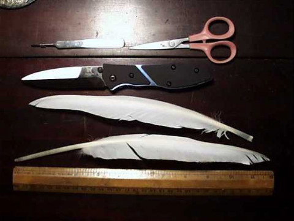
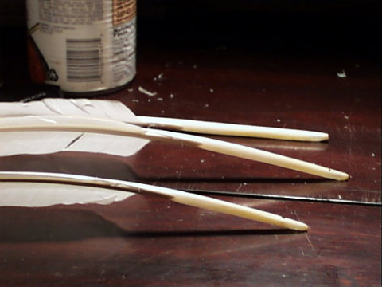
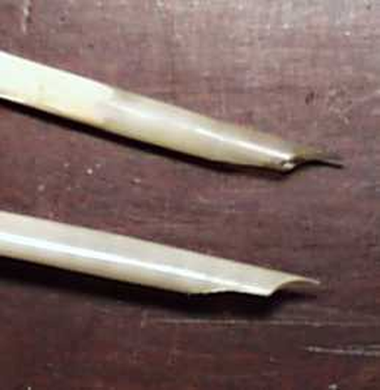
(깃털펜을 깎는 도구 및 깃털펜 가공 후 그 촉의 모습. 사진 출처 - http://www.flick.com/~liralen/quills/quills.html )
이렇듯 깃털펜은 예쁜 글씨를 쓰는 데는 좋을지 몰라도, 야전에서 간단한 명령서를 쓸 때는 매우 부적절했습니다. 당시 군대에서는 포탄이 바로 옆에 떨어지는 상황에서도 뭔가 명령을 내릴 때는 반드시 명령 문서를 작성해서 보냈거든요. 이때는 어떤 필기구를 써야 했을까요 ?
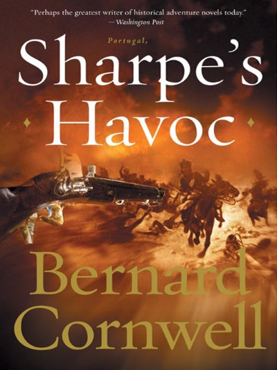
Sharpe's Havoc by Bernard Cornwell (배경: 1809년 포르투갈 북부) ----------------
"호간 대위가 제게 명령을 내렸습니다." 샤프는 고집스럽게 말했다.
"그러면 내가 다른 명령을 내리지." 크리스토퍼 대령은 마치 아주 어린 꼬마를 다루는 듯한 관대한 음성으로 말했다. 그의 안장 앞머리는 넓고 평평해서 종이를 올려놓고 쓸 만한 공간이 나왔고, 그는 여기에 공책을 올려놓고 연필을 꺼냈다. 바로 그때 능선 위의 붉은 꽃들이 피어있는 나무 숲에 프랑스군의 대포알이 꽂히면서 꽃잎들이 공중으로 날아올랐다.
"프랑스 놈들 벚꽃하고 전쟁을 하는구만." 크리스토퍼 대령은 가볍게 말했다.
----------------------------------------------------------------------------------
위에 인용된 소설의 한 구절처럼, 야전에서 사용된 것은 바로 연필(鉛筆)이었습니다. 나폴레옹 전쟁 당시에도 연필이 있었거든요. 하지만 이때 위의 크리스토퍼 대령처럼 영국군이 사용하던 연필과 프랑스군이 사용하던 연필, 그리고 독일군이 사용하던 연필은 모두 차이가 있었습니다. 그 차이는 바로 그 연필심에 있엇습니다.
연필심이라... 영국, 프랑스, 독일의 연필심 차이를 보기 전에, 잠깐 생각해보지요. 가만히 보면, 연필의 연(鉛)자는 납을 뜻합니다. 왜 납일까요 ?
연필을 뜻하는 영어는 pencil입니다만, 이 단어의 어원은 작은 꼬리를 뜻하는 라틴어인 pencillus에서 나온 것입니다. 납과는 무관합니다. 그리고 연필은 다들 아시다시피 흑연과 나무로 만드는 것입니다. 역시 납과는 무관합니다. 하지만 독일어로는 연필이 Bleistift 이고, 이는 '납 막대기'를 뜻합니다. 또 영어에서도 연필심은 lead, 즉 납이라고 부릅니다. 역시 연필은 뭔가 납과 상관이 있는 모양입니다. 연필심으로 쓰는 흑연에 납이라도 섞었던 것일까요 ? 다행히 그건 아닙니다.
원래 연필의 시작은 16세기 영국이었습니다. 배로우데일(Borrowdale) 지방에서 엄청난 양의 순수 흑연광이 발견되었거든요. 이 흑연광에서 나온 흑연 덩어리는 매우 순수하고 단단해서, 분필같은 막대 형태로 잘라내어 뭔가 쓰기에 딱 좋았다고 합니다. 당시에는 화학이 아직 발달하지 않아서, 사람들은 이 물질이 납과 상관이 있다고 생각했답니다. 그래서 영어에서도 아직도 연필심을 lead(납)이라고 부르고, 또 우리나라 단어로도, 독일 단어로도 연필에는 납을 뜻하는 단어가 들어가는 것입니다.
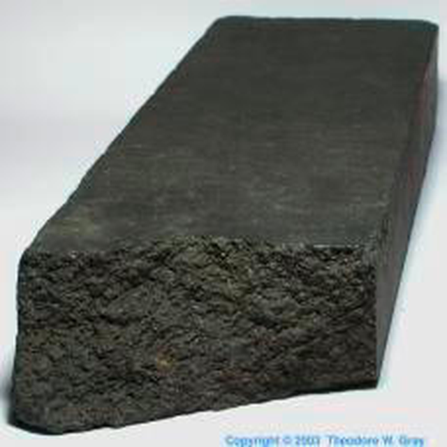
(이 흑연 덩어리는 영국의 Newcastle-upon-Tyne의 Newburn Haugh 지방에서 나온 것입니다.)
그런데 이 배로우데일 흑연광산과 나폴레옹 전쟁은 근대적인 연필의 개발과 깊은 관련이 있습니다. 우선, 이 영국 배로우데일 지방의 흑연광은 그 양이나 순도에 있어서 유럽 최고를 자랑했습니다. 초기에는 이 흑연을 포탄을 주조하는 거푸집 안쪽에 바르는 재료로 썼는데, 전략 물자라고 해서 이 광산을 영국 왕실에서 인수했고, 외국에 수출도 거의 하지 않았습니다. 그런데 이 흑연이 포탄 거푸집 뿐만 아니라 미술용 스케치 재료로 쓰면 끝내준다는 사실이 유럽 전역에 알려졌습니다. 이탈리아에서 최초로 흑연심을 나무틀 속에 넣어서 쓰는 방법을 개발했고, 곧 이어 두개의 나무판 사이에 홈을 파고 연필심을 넣은 후 접착, 절단하여 오늘날의 연필같은 형태가 개발되었습니다.
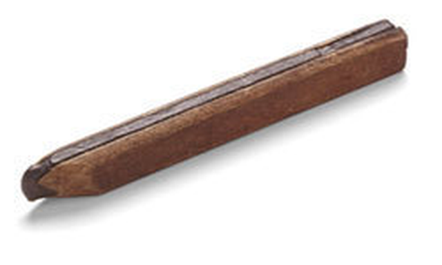
(초창기의 연필)
하지만 문제는 역시 연필심이었습니다. 영국 말고 다른 지역에서도 흑연광을 찾아내려는 노력이 진행되었고, 실제로 많은 곳에서 발견이 되었습니다만, 배로우데일산 흑연처럼 순수한 것은 끝내 발견되지 않았습니다. 불순물이 섞인 흑연은 도저히 연필로 사용할 수가 없었고, 불순물을 빼내자면 부숴서 가루를 내야 했습니다. 결국 영국산 순수 자연산 연필은 계속 독점을 누렸고, 1860년대까지도 영국산 연필은 모두 자연산 흑연을 그대로 잘라 만든 심을 썼습니다. 한마디로 품질이 최고였지요. 1662년에 독일 뉴렌베르크(Nurenberg)에서 흑연 가루와 황, 안티몬을 섞어서 연필심을 만드는 방법이 만들어지기는 했습니다만, 영국의 자연산 연필심만은 못했습니다.
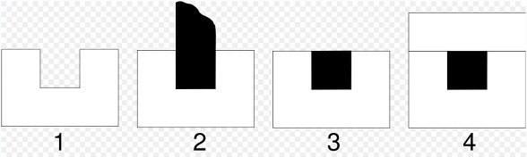
(자연산 연필심을 이용한 영국제 연필 제조법 - 당시 영국제 연필은 자연산 흑연 막대 모양에 맞춰 사각형이었습니다.)
문제는 나폴레옹 전쟁이 터지면서, 프랑스에서는 영국제이건 독일제이건 연필 수입이 딱 끊겨버렸다는 것에 있었습니다. 연필없이 전쟁할 수 있나요 ?
프랑스에는 영국처럼 순수 자연산 흑연 광산은 없었지만, 뛰어난 인재는 있었습니다. 나폴레옹 휘하의 프랑스군 장교이자 예술가, 엔지니어인 콩떼(Nicholas Jacques Conté, 1755년-1805년)라는 사람이 있었습니다.
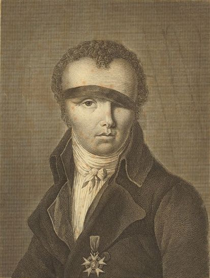
(니콜라스 자크 콩떼 - 오우, 아주 인상적이신 모습이시네요.)
이 양반은 나폴레옹을 따라 이집트까지 가서, 아부키르 해전 이후 프랑스로부터의 보급이 딱 끊긴 이후 프랑스군의 현지 기계 제작 전문가로 활약한 분입니다. 나폴레옹은 콩떼를 "아라비아 사막 한 가운데서도 프랑스의 예술혼을 꽃피울 수 있는 취향과 깊은 이해, 그리고 천재성을 가진 보편적 인물"이라고 평했습니다. 콩떼는 예술가말고도 재주가 많아서 프랑스 최초의 공군이라고 할 수 있는 것을 만들었습니다. 바로 기구지요. 콩떼는 기구를 포격 제어 및 적진 정찰용으로 쓸 것을 주창한 최초의 사람들 중 한 명입니다. 그는 수소 가스의 제조 및 가스 주머니의 처리 방법 연구에 많은 기여를 했습니다.
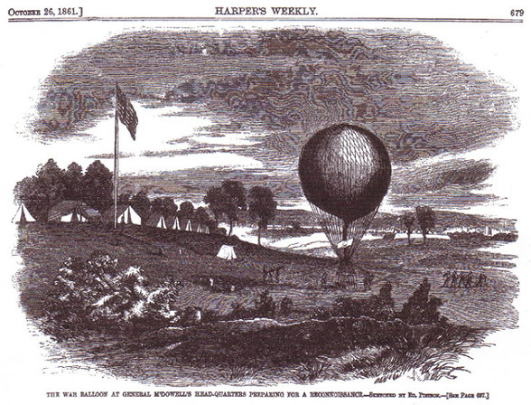
(미국 남북전쟁 당시 북군의 기구 부대)
특히 콩떼는 이집트 카이로에 기구를 띄운 것으로 유명합니다. 원래 나폴레옹의 이집트 원정의 목표 중 하나가 "문명의 발상지에 문명을 되돌려 준다"는 약간 믿어지지 않는 낭만적 이유도 있었거든요. 아무튼 그런 활동 중의 하나로, 프랑스의 과학 문명을 과시하기 위해 1798년에 카이로에서 수많은 이집트 시민들이 지켜보는 가운데 기구를 띄웠는데, 불행히도 첫번째 기구는 불에 타버려 이집트인들에게 "저건 하늘로부터 적진에 화공(火攻)을 가하는 무기인 모양"이라는 잘못된 인식을 주는 결과를 내버렸습니다. 두번째 기구는 좀더 컸고 10만 군중이 지켜보는 가운데 성공적으로 하늘에 떴습니다만, 그 광경을 직접 본 이집트의 지식인인 알 자바르티(Al Jabarti)가 나중에 쓴 글에 "프랑스인들이 띄운 기구라는 것은 축제 때 카이로의 노예들이 띄우던 연 같은 것으로서, 저걸 타고 여러 나라를 여행할 수 있다는 건 말도 안되는 거짓말"이라는 평가가 내려진 것으로 보아, 프랑스의 과학기술력을 이집트에 과시한다는 목표는 이루지 못했던 모양입니다.
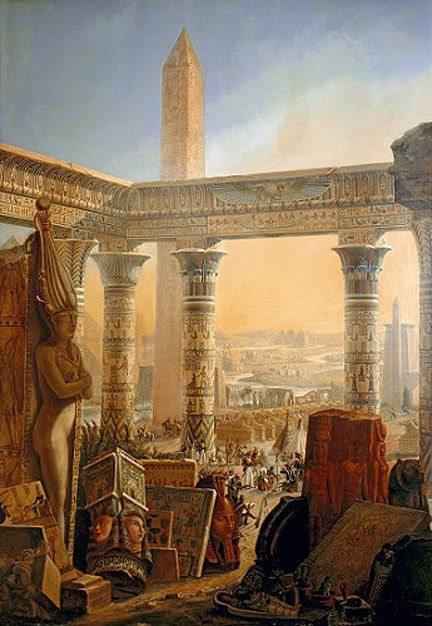
(암만 봐도 이집트인들이 프랑스 문명에 감탄하기 보다는, 프랑스 학자들이 이집트 문명에 감탄했다는 느낌이 들지 않습니까 ?)
하지만 콩떼가 1795년, 현대식 연필심을 개발한 공로는 아무도 부정할 수가 없습니다. 영국이나 독일로부터의 연필심 수입이 끊겨 고생하던 당시, 프랑스 혁명 정부의 카르노(Lazare Carnot) 장군이 연필심을 개발해달라는 요청을 받은지 며칠만에, 콩떼는 흑연 가루에 찰흙을 섞어 구워서 단단하면서도 쓰기 좋은 연필심을 만들어냅니다. 또 연필심의 딱딱함도 이 과정 중에 조절할 수 있다는 것도 알아냈고요. 덕분에 나폴레옹의 장교들도 영국군이 쓰는 자연산 연필심 못지 않게 훌륭한 연필을 쓸 수 있었습니다. 오늘날의 연필심은 (심지어 영국에서도) 바로 이 콩떼가 개발한 방법대로 만들어지고 있습니다.
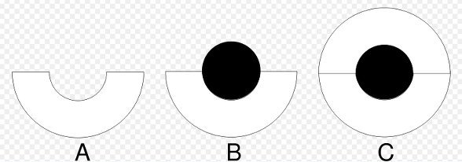
(구워서 만든 둥근 연필심을 이용한 연필 제조법 - 오늘날의 것과 기본적으로 같습니다.)